<title>Handleiding beheer Toon over Leven</title>
<meta name="claude:viewport-fit-sides" content="cover">
<link rel="preconnect" href="https://fonts.googleapis.com">
<link rel="preconnect" href="https://fonts.gstatic.com" crossorigin>
<link rel="stylesheet" href="https://fonts.googleapis.com/css2?family=IBM+Plex+Mono:wght@400;500&family=IBM+Plex+Sans:wght@400;500;600;700&display=swap">
<style>
/* Layout: one reading column; each step is text beside its screenshot, stacked on a phone. White and black on purpose, in both themes. */
:root {
  --paper: #ffffff;
  --ink: #111111;
  --muted: #4a4a4a;
  --rule: #d9d9d9;
  --mark: #c4001a;      /* same red as the outlines in the screenshots */
  --chip: #f2f2f2;
  --sans: "IBM Plex Sans", "Helvetica Neue", Arial, sans-serif;
  --mono: "IBM Plex Mono", ui-monospace, Menlo, monospace;
  color-scheme: light;
}
* { box-sizing: border-box; }
body {
  background: var(--paper); color: var(--ink);
  font: 400 17px/1.6 var(--sans);
  padding-left: max(16px, env(safe-area-inset-left, 0px));
  padding-right: max(16px, env(safe-area-inset-right, 0px));
  padding-block: 48px 96px;
}
main { max-width: 1040px; margin: 0 auto; display: grid; gap: 56px; }
h1, h2, h3 { text-wrap: balance; line-height: 1.2; margin: 0; }
h1 { font-size: 2.2rem; font-weight: 700; letter-spacing: -0.01em; }
h2 { font-size: 1.55rem; font-weight: 700; padding-top: 28px; border-top: 2px solid var(--ink); }
h3 { font-size: 1.15rem; font-weight: 600; }
p, ol, ul { margin: 0; }
ol, ul { padding-left: 1.3em; display: grid; gap: 6px; }
a { color: var(--ink); text-underline-offset: 3px; }
a:focus-visible { outline: 3px solid var(--mark); outline-offset: 2px; }
code, .adres { font-family: var(--mono); font-size: 0.92em; }
.knop { display: inline-block; padding: 0 7px; border: 1px solid var(--rule); border-radius: 4px; background: var(--chip); font-weight: 600; font-size: 0.92em; white-space: nowrap; }
.veld { font-weight: 600; }
.lead { font-size: 1.1rem; color: var(--muted); max-width: 62ch; }
header { display: grid; gap: 14px; }
.meta { font-size: 0.9rem; color: var(--muted); }

.inhoud { display: grid; gap: 4px; padding: 20px 24px; border: 1px solid var(--rule); border-radius: 6px; }
.inhoud h2 { border: 0; padding: 0; font-size: 1rem; margin-bottom: 6px; }
.inhoud ol { gap: 2px; }

section { display: grid; gap: 28px; }
.stap { display: grid; grid-template-columns: minmax(0, 1fr) minmax(0, 400px); gap: 32px; align-items: start; }
.stap > div { display: grid; gap: 12px; min-width: 0; }
.stap.breed { grid-template-columns: minmax(0, 1fr); }
.stap.breed > div { max-width: 68ch; }
figure { margin: 0; display: grid; gap: 6px; }
figure img { width: 100%; height: auto; border: 1px solid var(--rule); border-radius: 4px; display: block; }
figcaption { font-size: 0.85rem; color: var(--muted); }

.let { padding: 12px 16px; border-left: 3px solid var(--mark); background: var(--chip); }
.let strong { color: var(--mark); }
table { border-collapse: collapse; width: 100%; font-size: 0.97rem; }
th, td { text-align: left; vertical-align: top; padding: 9px 12px 9px 0; border-bottom: 1px solid var(--rule); }
th { font-weight: 600; white-space: nowrap; }
.tabel { overflow-x: auto; }

@media (max-width: 760px) {
  body { font-size: 16px; padding-block: 28px 64px; }
  h1 { font-size: 1.75rem; }
  .stap { grid-template-columns: minmax(0, 1fr); gap: 16px; }
  figure { max-width: 420px; }
}
@media print {
  body { padding: 0; font-size: 10.5pt; }
  /* Block flow in print: a grid row would stretch to fill the page next to a page break. */
  main, section { display: block; }
  main > * + * { margin-top: 8mm; }
  section > * + * { margin-top: 7mm; }
  section > h2 { break-before: page; }
  .stap, figure, .let, table { break-inside: avoid; }
  .stap { grid-template-columns: minmax(0, 1fr) 82mm; gap: 8mm; }
  .stap.breed figure { max-width: 150mm; }
  a { text-decoration: none; }
}
</style>

<main>
<header>
  <h1>Handleiding beheer</h1>
  <p class="lead">Zo past u zelf de agenda, het nieuws, de teksten en de sponsoren van toonoverleven.nl aan.</p>
  <p class="meta">Toon over Leven · versie oktober 2026</p>
</header>

<nav class="inhoud" aria-label="Inhoud">
  <h2>Inhoud</h2>
  <ol>
    <li><a href="#inloggen">Inloggen</a></li>
    <li><a href="#publiceren">Opslaan en publiceren</a></li>
    <li><a href="#agenda">Agenda</a></li>
    <li><a href="#nieuws">Nieuws</a></li>
    <li><a href="#paginas">Teksten en foto’s op pagina’s</a></li>
    <li><a href="#gegevens">Contactgegevens, inlooptijden en bestuur</a></li>
    <li><a href="#sponsoren">Sponsoren</a></li>
    <li><a href="#hulp">Hulp</a></li>
  </ol>
</nav>

<!-- 1 -->
<section id="inloggen">
  <h2>1. Inloggen</h2>
  <div class="stap">
    <div>
      <ol>
        <li>Ga naar <span class="adres">toonoverleven.nl/beheer</span>.</li>
        <li>Kies de manier waarop uw account is aangemaakt: <span class="knop">Google</span> of <span class="knop">E-mail / password</span>. U krijgt daarvoor eenmalig een uitnodiging per e-mail.</li>
        <li>U komt op het startscherm.</li>
      </ol>
      <p>Bewaar het adres als bladwijzer. U blijft ingelogd tot u zelf uitlogt via het rondje met uw initialen rechtsboven.</p>
    </div>
    <figure>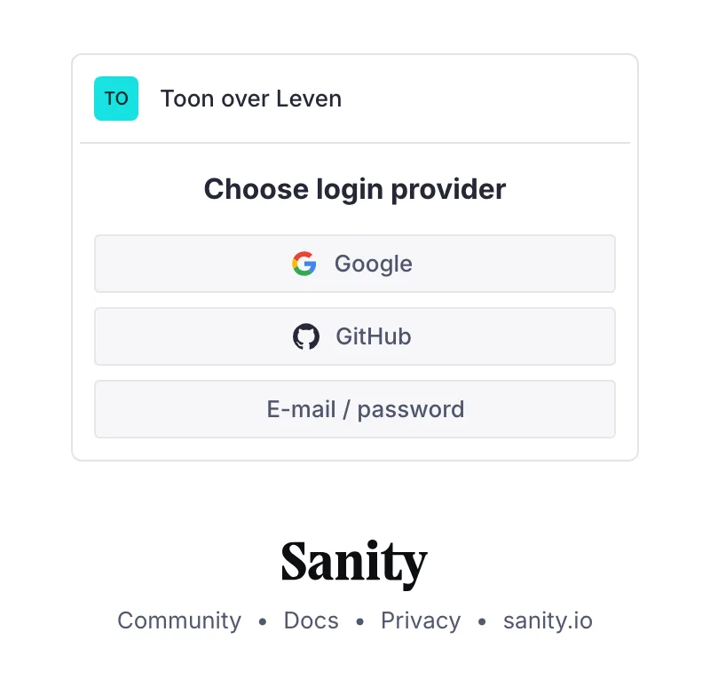</figure>
  </div>
  <div class="stap breed">
    <div>
      <h3>Het startscherm</h3>
      <p>Klik op een onderdeel om te beginnen, of bovenin op <span class="knop">Structure</span> voor het menu aan de linkerkant. Dat menu ziet u daarna steeds.</p>
      <div class="tabel"><table>
        <tr><th>Agenda</th><td>De maandkalender. Activiteiten toevoegen en wijzigen.</td></tr>
        <tr><th>Alle agendapunten</th><td>Dezelfde agenda als lijst. Handig om te zoeken of iets van lang geleden terug te vinden.</td></tr>
        <tr><th>Nieuws &amp; Blog</th><td>De berichten op de nieuwspagina.</td></tr>
        <tr><th>Pagina’s en vaste onderdelen</th><td>Teksten, foto’s en links op de pagina’s van de site.</td></tr>
        <tr><th>Teksten op de site</th><td>Contactgegevens, inlooptijden, adres, bestuur en raad van advies.</td></tr>
        <tr><th>Sponsoren</th><td>De logo’s op de voorpagina en op Onze sponsors.</td></tr>
      </table></div>
      <p>De knoppen <span class="knop">Releases</span> en <span class="knop">Concepten</span> bovenin heeft u niet nodig.</p>
    </div>
    <figure>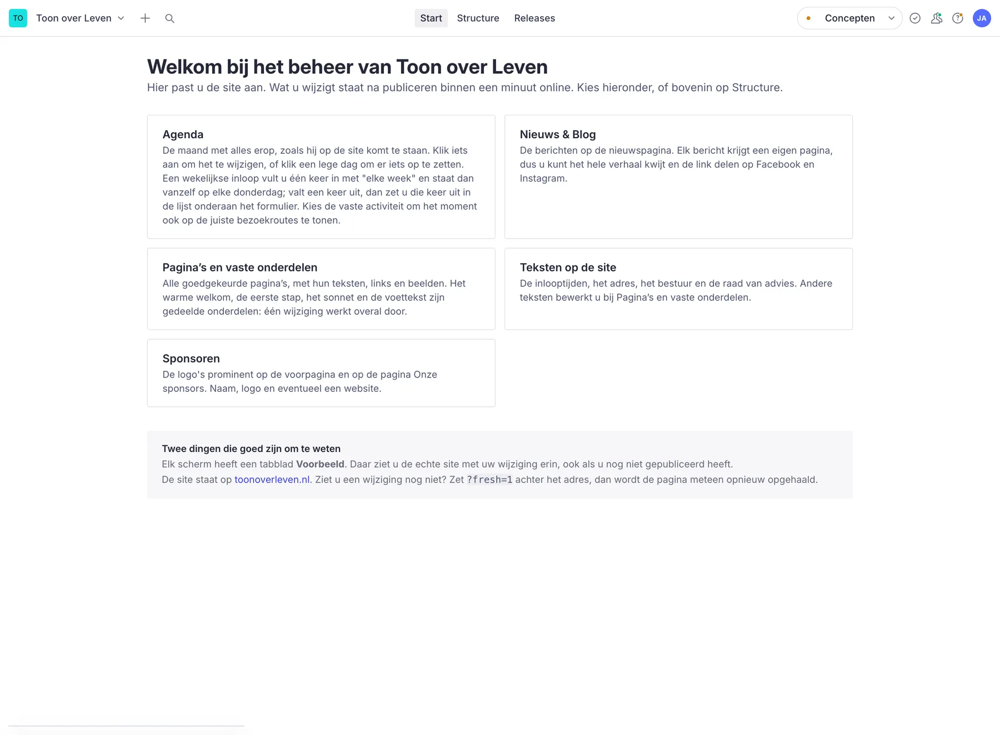</figure>
  </div>
</section>

<!-- 2 -->
<section id="publiceren">
  <h2>2. Opslaan en publiceren</h2>
  <div class="stap">
    <div>
      <p>Dit geldt voor elk onderdeel.</p>
      <ol>
        <li>Alles wat u typt wordt meteen bewaard als <strong>concept</strong>. U hoeft niet op opslaan te drukken.</li>
        <li>Bezoekers zien uw wijziging pas als u rechtsonder op <span class="knop">Publiceren</span> klikt.</li>
        <li>Binnen een minuut staat het op de site. Ziet u het nog niet, ververs de pagina dan.</li>
      </ol>
      <p class="let">Is de knop <span class="knop">Publiceren</span> grijs, dan is er niets om te publiceren. Is hij zwart, dan staat er een wijziging klaar die bezoekers nog <strong>niet</strong> zien.</p>
    </div>
    <figure>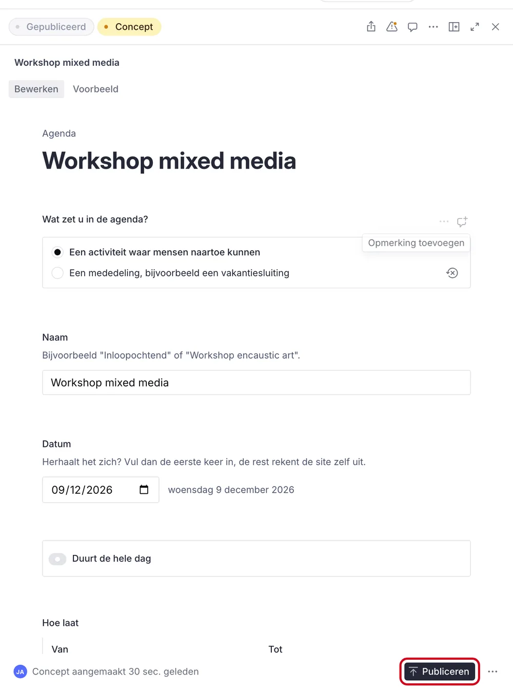<figcaption>Bovenaan staat <em>Concept</em>: dit is nog niet gepubliceerd.</figcaption></figure>
  </div>
  <div class="stap">
    <div>
      <h3>Eerst bekijken</h3>
      <p>Klik bovenaan op het tabblad <span class="knop">Voorbeeld</span>. U ziet de echte site met uw wijziging erin, ook als u nog niet heeft gepubliceerd. Met <span class="knop">Bewerken</span> gaat u terug naar het formulier.</p>
    </div>
    <figure>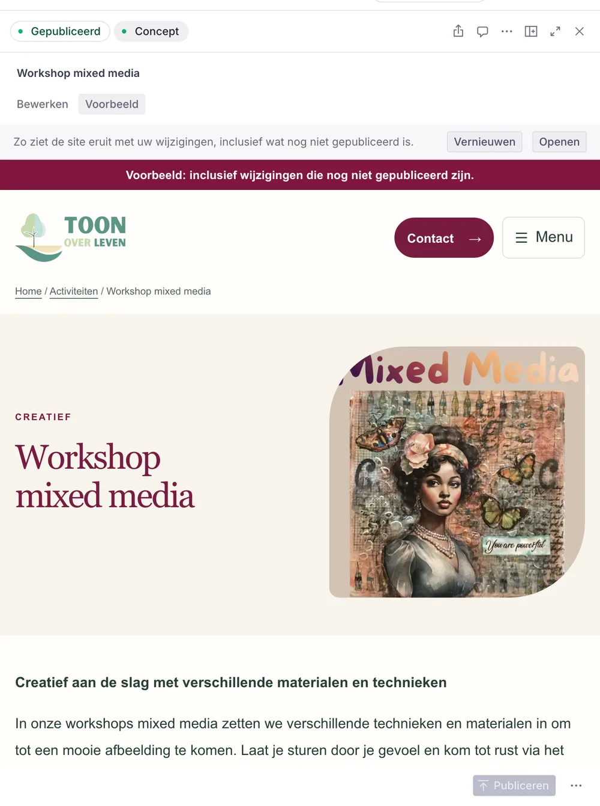</figure>
  </div>
  <div class="stap">
    <div>
      <h3>Terugdraaien of verwijderen</h3>
      <p>Klik op <span class="knop">···</span> naast <span class="knop">Publiceren</span>:</p>
      <ul>
        <li><span class="veld">Wijzigingen verwijderen</span>: uw concept vervalt en de gepubliceerde versie blijft staan.</li>
        <li><span class="veld">Verwijderen</span>: het hele item verdwijnt, ook van de site.</li>
        <li><span class="veld">Dupliceren</span>: maakt een kopie, handig voor een activiteit die vaker terugkomt.</li>
      </ul>
    </div>
    <figure>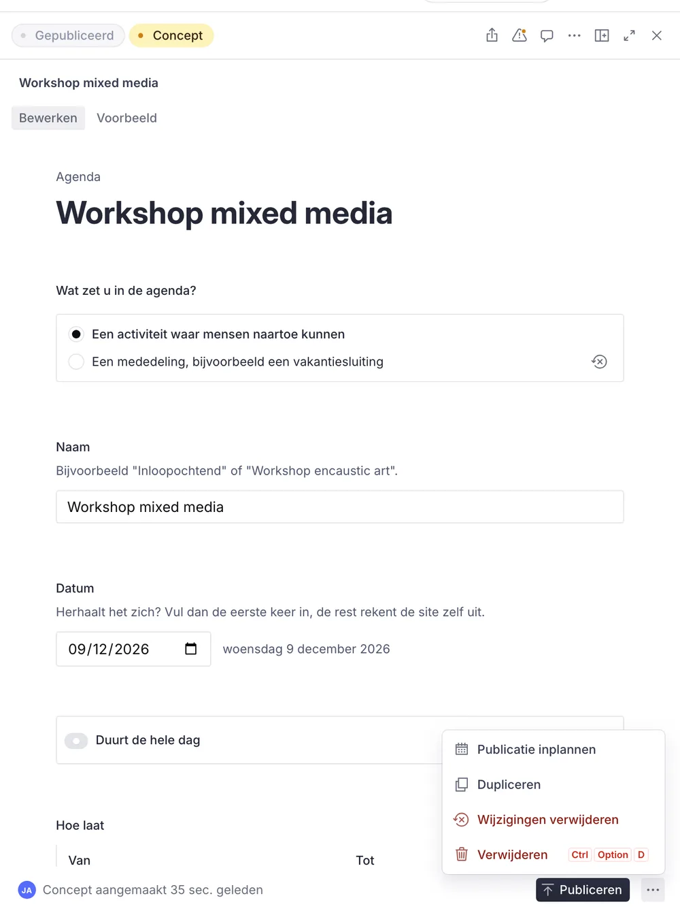</figure>
  </div>
</section>

<!-- 3 -->
<section id="agenda">
  <h2>3. Agenda</h2>
  <div class="stap breed">
    <div>
      <h3>De kalender</h3>
      <p>Menu <span class="veld">Agenda</span> toont de maand zoals hij op de site staat. Met <span class="knop">Vorige</span> en <span class="knop">Volgende</span> bladert u.</p>
      <ul>
        <li>Klik op een activiteit om hem te openen en te wijzigen.</li>
        <li>Klik op een lege dag om daar iets nieuws op te zetten.</li>
        <li>Of klik op <span class="knop">Nieuw agendapunt</span>.</li>
      </ul>
      <p>Voorbije activiteiten verdwijnen vanzelf van de site. U hoeft ze niet te verwijderen.</p>
    </div>
    <figure>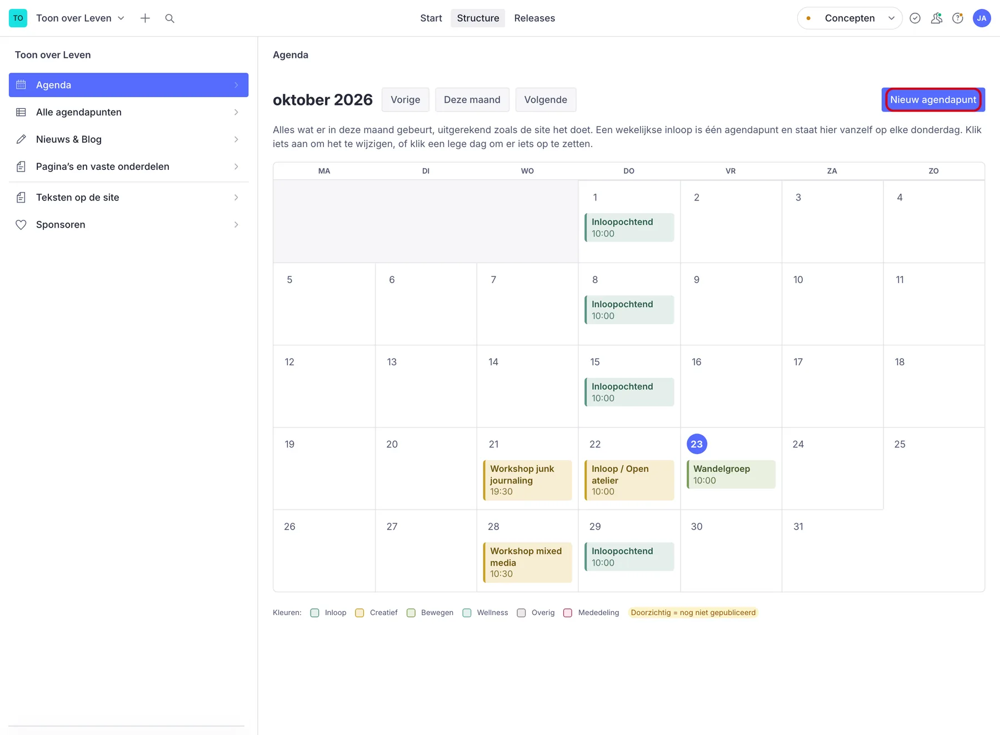</figure>
  </div>

  <div class="stap">
    <div>
      <h3>Een activiteit toevoegen</h3>
      <ol>
        <li><span class="veld">Wat zet u in de agenda?</span> Kies <em>Een activiteit</em>.</li>
        <li><span class="veld">Naam</span>, bijvoorbeeld <em>Workshop mixed media</em>.</li>
        <li><span class="veld">Datum</span>, en onder <span class="veld">Hoe laat</span> de begin- en eindtijd.</li>
        <li><span class="veld">Herhaalt zich</span>: laat op <em>Niet, het is één keer</em>. Voor een vaste reeks zie hieronder.</li>
      </ol>
    </div>
    <figure>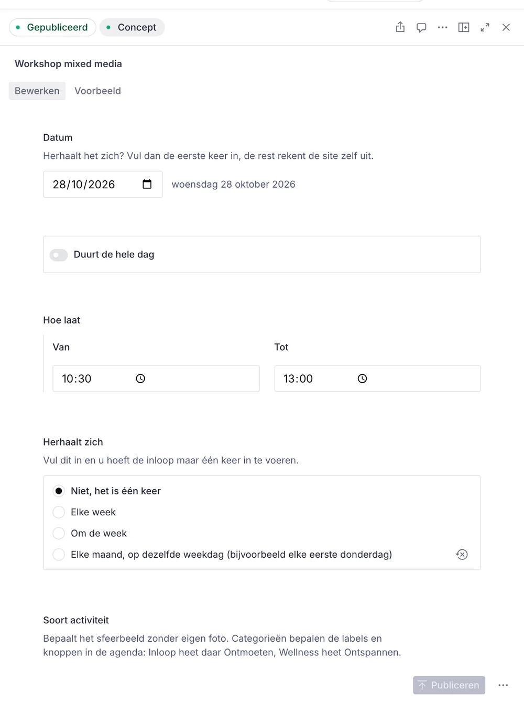</figure>
  </div>
  <div class="stap">
    <div>
      <ol start="5">
        <li><span class="veld">Soort activiteit</span>: Inloop, Creatief, Bewegen, Wellness of Overig. Dit bepaalt het label en de standaardfoto.</li>
        <li><span class="veld">Vaste activiteit</span>: kies de activiteit waar het bij hoort, bijvoorbeeld <em>Mixed media</em>. Dan staat het moment ook op de pagina van die activiteit.</li>
        <li><span class="veld">Voor wie is het</span> en <span class="veld">Thema’s</span>: voor de filters in de agenda. Bij twijfel: <em>Iedereen</em>.</li>
      </ol>
    </div>
    <figure>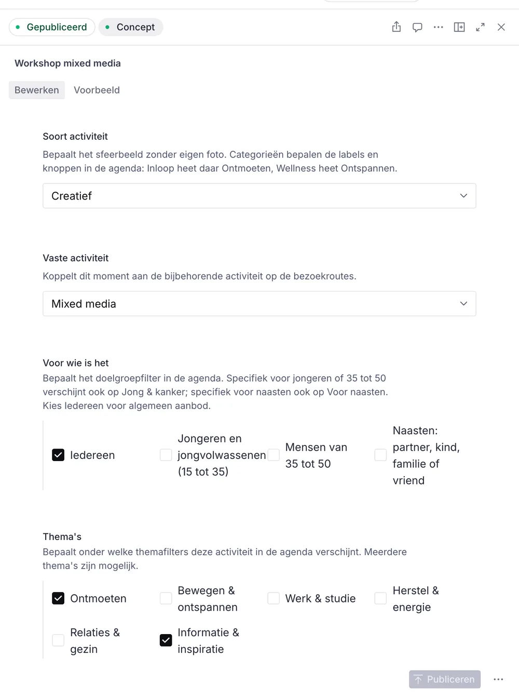</figure>
  </div>
  <div class="stap">
    <div>
      <ol start="8">
        <li><span class="veld">Waar gaat het over</span>: een paar zinnen. Een witregel begint een nieuwe alinea. Tekst tussen twee sterretjes, <code>**zo**</code>, wordt vet.</li>
        <li><span class="veld">Foto</span>: sleep een foto in het vak. Mag leeg blijven: de site kiest dan een passende standaardfoto.</li>
      </ol>
      <p>Schrijf in de tekst niet dat men zich per mail moet aanmelden. Daar is het aanmeldformulier voor (stap 10).</p>
    </div>
    <figure>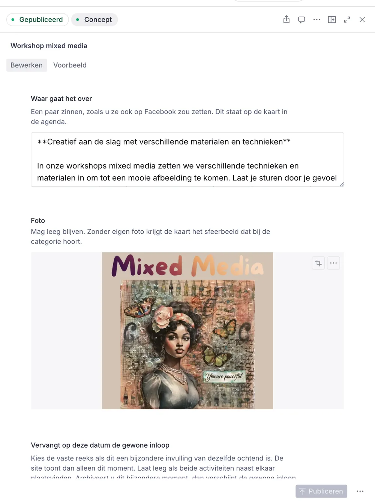</figure>
  </div>
  <div class="stap">
    <div>
      <ol start="10">
        <li><span class="veld">Aanmelden nodig</span>
          <ul>
            <li><strong>Aan</strong>: bij de activiteit staat de knop <em>Aanmelden of meer informatie</em>. Die opent het aanmeldformulier van de site. Aanmeldingen en vragen komen binnen op <span class="adres">info@toonoverleven.nl</span>; u laat de aanmelder zelf weten of er plek is.</li>
            <li><strong>Uit</strong>: de site zegt dat men zo kan binnenlopen.</li>
          </ul>
        </li>
        <li><span class="veld">Volgeboekt</span>: zet aan zodra het vol is. Aanmelden kan dan niet meer.</li>
        <li><span class="veld">Wat het kost</span>, bijvoorbeeld <em>Gratis</em> of <em>€ 7,50</em>.</li>
        <li><span class="veld">Waar</span>: alleen invullen als het niet in het huis aan de Mazerhard is.</li>
        <li>Klik op <span class="knop">Publiceren</span>.</li>
      </ol>
    </div>
    <figure>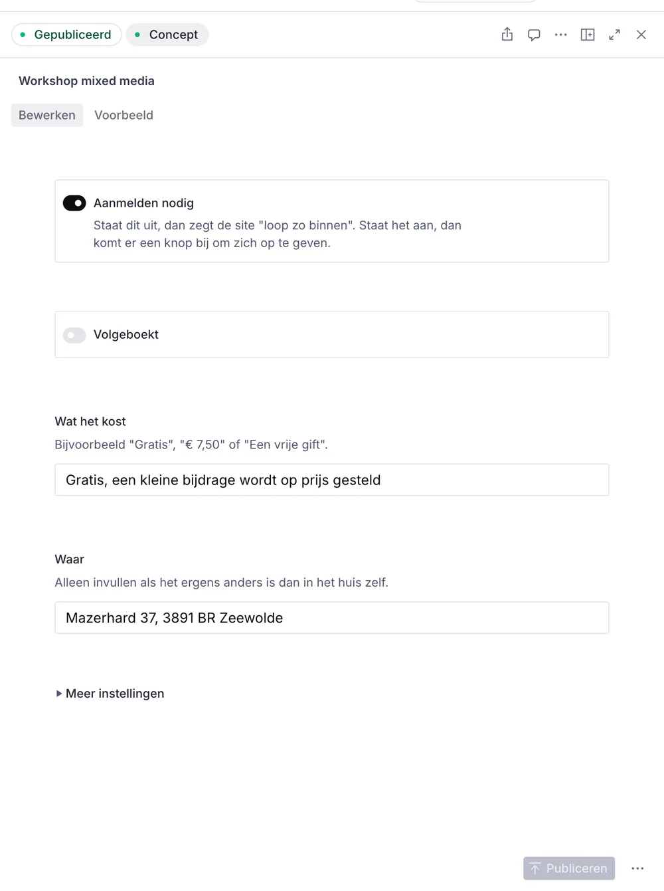</figure>
  </div>

  <div class="stap">
    <div>
      <h3>Een vaste reeks: de inloopochtend</h3>
      <p>De inloop staat één keer in de agenda en herhaalt zich vanzelf.</p>
      <ul>
        <li><span class="veld">Herhaalt zich</span>: <em>Elke week</em>, <em>Om de week</em> of <em>Elke maand</em>.</li>
        <li><span class="veld">Herhalen tot en met</span>: de laatste datum. Leeg laten betekent dat het doorloopt.</li>
      </ul>
      <p>Open de reeks via <span class="veld">Alle agendapunten</span> (de regel met <em>elke week</em>), of klik in de kalender op een van de inloopochtenden.</p>
    </div>
    <figure>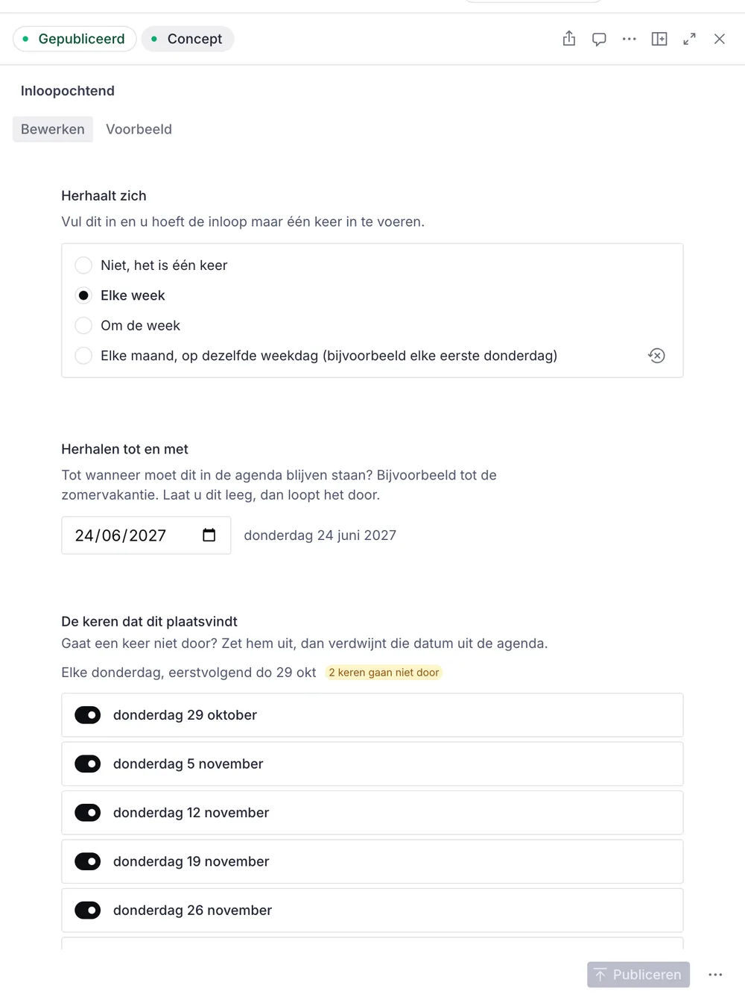</figure>
  </div>
  <div class="stap">
    <div>
      <h3>Eén keer gaat niet door</h3>
      <p>Scrol naar <span class="veld">De keren dat dit plaatsvindt</span> en zet de schakelaar bij die datum uit. Publiceer. De datum verdwijnt van de site; de rest van de reeks blijft staan.</p>
      <p class="let">Heeft de inloop op één datum een andere invulling, zoals een open atelier? Maak een nieuwe activiteit op die datum en kies bij <span class="veld">Vervangt op deze datum de gewone inloop</span> de inloopochtend. Op die dag toont de site dan alleen de nieuwe activiteit.</p>
    </div>
    <figure>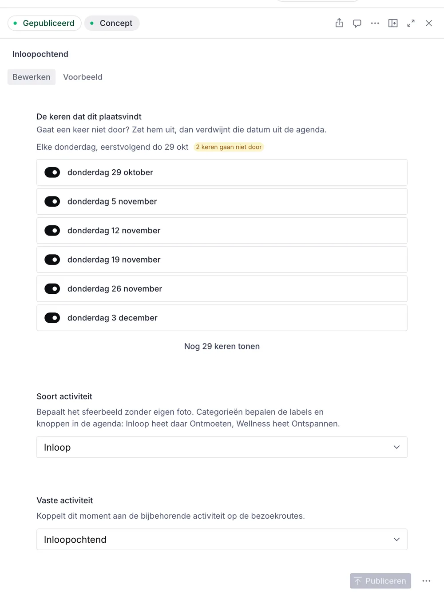</figure>
  </div>
  <div class="stap">
    <div>
      <h3>Een activiteit van de site halen</h3>
      <ul>
        <li><strong>Tijdelijk</strong>: open <span class="veld">Meer instellingen</span> onderaan het formulier, zet <span class="veld">Archiveren</span> aan en publiceer. Het blijft bewaard in het beheer.</li>
        <li><strong>Definitief</strong>: <span class="knop">···</span> naast Publiceren, dan <span class="veld">Verwijderen</span>.</li>
      </ul>
      <p>Laat de andere velden onder <span class="veld">Meer instellingen</span> met rust, tenzij een andere organisatie de aanmelding regelt: dan vult u bij <span class="veld">Externe aanmeldpagina</span> hun link in.</p>
    </div>
    <figure>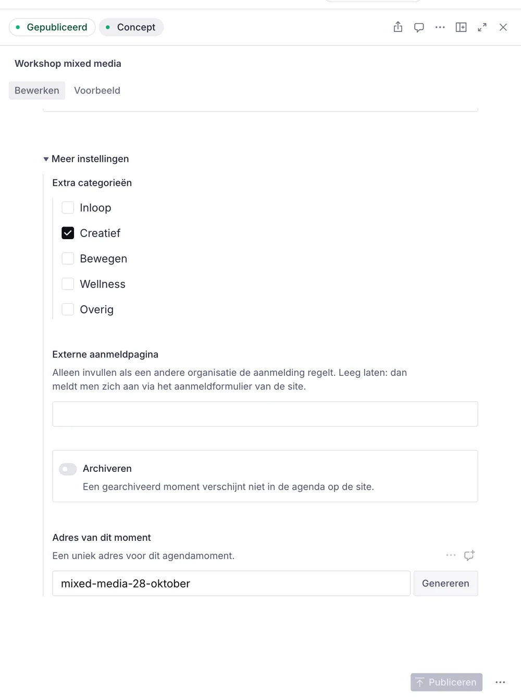</figure>
  </div>
  <div class="stap breed">
    <div>
      <h3>Een mededeling, zoals een vakantiesluiting</h3>
      <ol>
        <li>Nieuw agendapunt, kies bij <span class="veld">Wat zet u in de agenda?</span> <em>Een mededeling</em>.</li>
        <li>Vul de <span class="veld">Naam</span> in, bijvoorbeeld <em>Het huis is dicht wegens de zomervakantie</em>, de eerste dag bij <span class="veld">Datum</span> en de laatste dag bij <span class="veld">Tot en met</span>.</li>
        <li>Publiceer. Zolang de periode loopt, staat de mededeling als balk bovenaan elke pagina.</li>
      </ol>
    </div>
  </div>
</section>

<!-- 4 -->
<section id="nieuws">
  <h2>4. Nieuws</h2>
  <div class="stap breed">
    <div>
      <p>Menu <span class="veld">Nieuws &amp; Blog</span>. Klik op een bericht om het te wijzigen, of op <span class="knop">+</span> boven de lijst voor een nieuw bericht.</p>
    </div>
    <figure>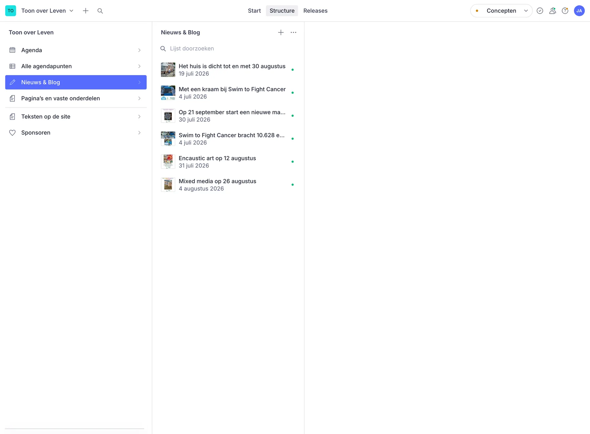</figure>
  </div>
  <div class="stap">
    <div>
      <h3>Een bericht schrijven</h3>
      <ol>
        <li><span class="veld">Kop</span>: de titel van het bericht.</li>
        <li><span class="veld">Adres van dit bericht</span>: klik op <span class="knop">Genereren</span>. Wijzig het daarna niet meer, anders werken gedeelde links niet.</li>
        <li><span class="veld">Datum</span>: bepaalt de volgorde. Het nieuwste staat vooraan.</li>
        <li><span class="veld">Bovenaan houden</span>: alleen voor een bericht dat voorop moet blijven staan.</li>
        <li><span class="veld">Foto</span>: staat op de kaart en boven het bericht.</li>
      </ol>
    </div>
    <figure>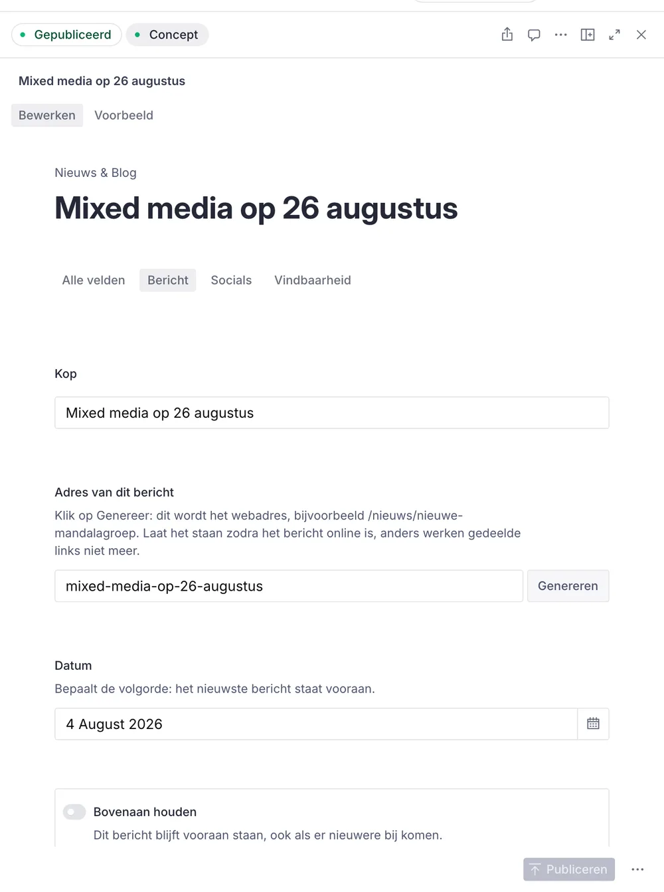</figure>
  </div>
  <div class="stap">
    <div>
      <ol start="6">
        <li><span class="veld">Inleiding</span>: één of twee zinnen. Die staan op de kaart in het overzicht.</li>
        <li><span class="veld">Bericht</span>: het hele verhaal. Met de knoppen boven het tekstvak maakt u een tussenkop, opsomming, vette tekst of een link. Met <span class="knop">Foto</span> zet u een foto tussen de tekst.</li>
        <li>Klik op <span class="knop">Publiceren</span>.</li>
      </ol>
      <p>Onder het tabblad <span class="knop">Socials</span> kunt u een link naar hetzelfde bericht op Facebook of Instagram zetten. <span class="knop">Vindbaarheid</span> mag leeg blijven.</p>
    </div>
    <figure>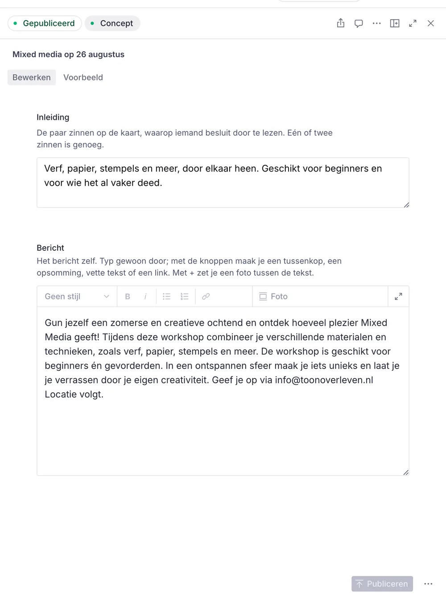</figure>
  </div>
</section>

<!-- 5 -->
<section id="paginas">
  <h2>5. Teksten en foto’s op pagina’s</h2>
  <div class="stap breed">
    <div>
      <p>Menu <span class="veld">Pagina’s en vaste onderdelen</span> bevat elke pagina van de site, met het adres eronder. Daarnaast staan er onderdelen die op meerdere pagina’s terugkomen. Een wijziging daarin werkt overal door:</p>
      <ul>
        <li><span class="veld">Voettekst</span>: de groene balk onderaan elke pagina.</li>
        <li><span class="veld">Een warm welkom</span>, <span class="veld">Zet de eerste stap</span>, <span class="veld">Sonnet van Henk</span>, <span class="veld">Nieuwsbrief</span>: blokken die op meerdere pagina’s staan.</li>
        <li><span class="veld">Formulieren en vaste labels</span>: de teksten in de formulieren, zoals het aanmeldformulier en de bedankmelding.</li>
      </ul>
    </div>
    <figure>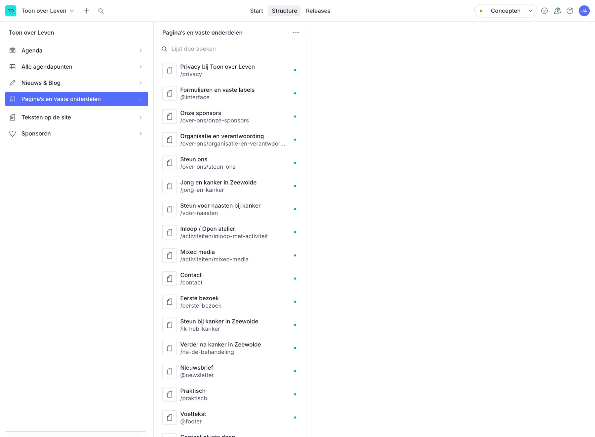</figure>
  </div>
  <div class="stap">
    <div>
      <h3>Een tekst wijzigen</h3>
      <ol>
        <li>Open de pagina. U staat op het tabblad <span class="knop">Teksten</span>.</li>
        <li>De teksten staan in de volgorde van de pagina. De bovenste regel zegt waar de tekst staat, de onderste regel is de tekst zelf.</li>
        <li>Klik op de regel, wijzig de tekst en sluit het venster.</li>
        <li>Controleer met <span class="knop">Voorbeeld</span> en klik op <span class="knop">Publiceren</span>.</li>
      </ol>
      <ul>
        <li>Een foto vervangen: tabblad <span class="knop">Beelden</span>.</li>
        <li>Waar een knop naartoe gaat: tabblad <span class="knop">Links</span>.</li>
      </ul>
      <p class="let">Maakt u een tekstvak <strong>leeg</strong>, dan verdwijnt die tekst van de pagina. De opmaak en de volgorde van de blokken kunt u hier niet wijzigen. Wilt u een blok erbij of eraf, vraag het ons.</p>
    </div>
    <figure>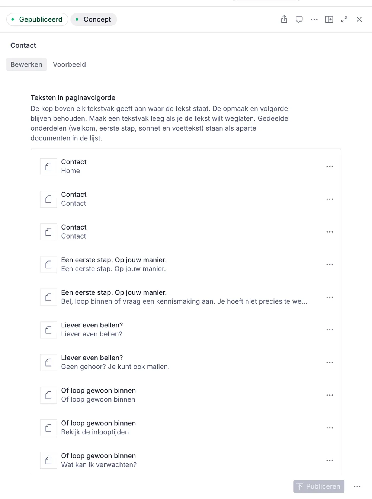</figure>
  </div>
</section>

<!-- 6 -->
<section id="gegevens">
  <h2>6. Contactgegevens, inlooptijden en bestuur</h2>
  <div class="stap">
    <div>
      <p>Menu <span class="veld">Teksten op de site</span>. Wat hier staat, staat op meerdere plekken op de site. Wijzig het daarom hier en niet op een losse pagina.</p>
      <ul>
        <li><span class="veld">Contactgegevens</span>: e-mailadres, vast en mobiel nummer. Ze staan in de voettekst, op Contact, op Praktisch en bij de formulieren.</li>
        <li><span class="veld">Inlooptijden</span>: de vaste tijd van de inloopochtend.</li>
        <li><span class="veld">Vakanties en wijzigingen</span>: een korte regel bij de inlooptijden op Praktisch.</li>
        <li><span class="veld">Locatie</span>: het adres.</li>
      </ul>
    </div>
    <figure>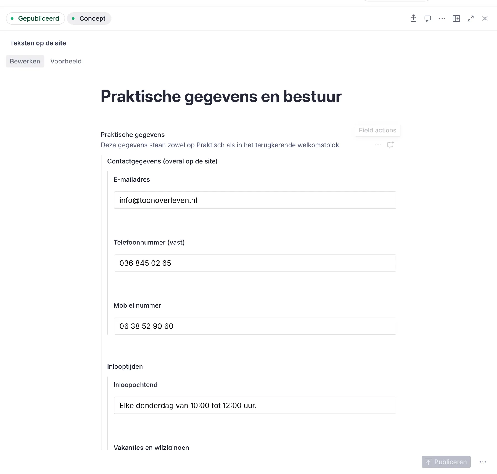</figure>
  </div>
  <div class="stap">
    <div>
      <h3>Bestuur en Raad van Advies</h3>
      <ul>
        <li>Iemand toevoegen: <span class="knop">Voeg item toe</span>, vul <span class="veld">Naam</span> en <span class="veld">Functie</span> in.</li>
        <li>Volgorde wijzigen: sleep aan de puntjes links van de naam.</li>
        <li>Iemand weghalen: <span class="knop">···</span> rechts van de naam, dan <span class="veld">Verwijderen</span>.</li>
      </ul>
      <p>Deze lijsten staan op de pagina Organisatie en verantwoording.</p>
    </div>
    <figure>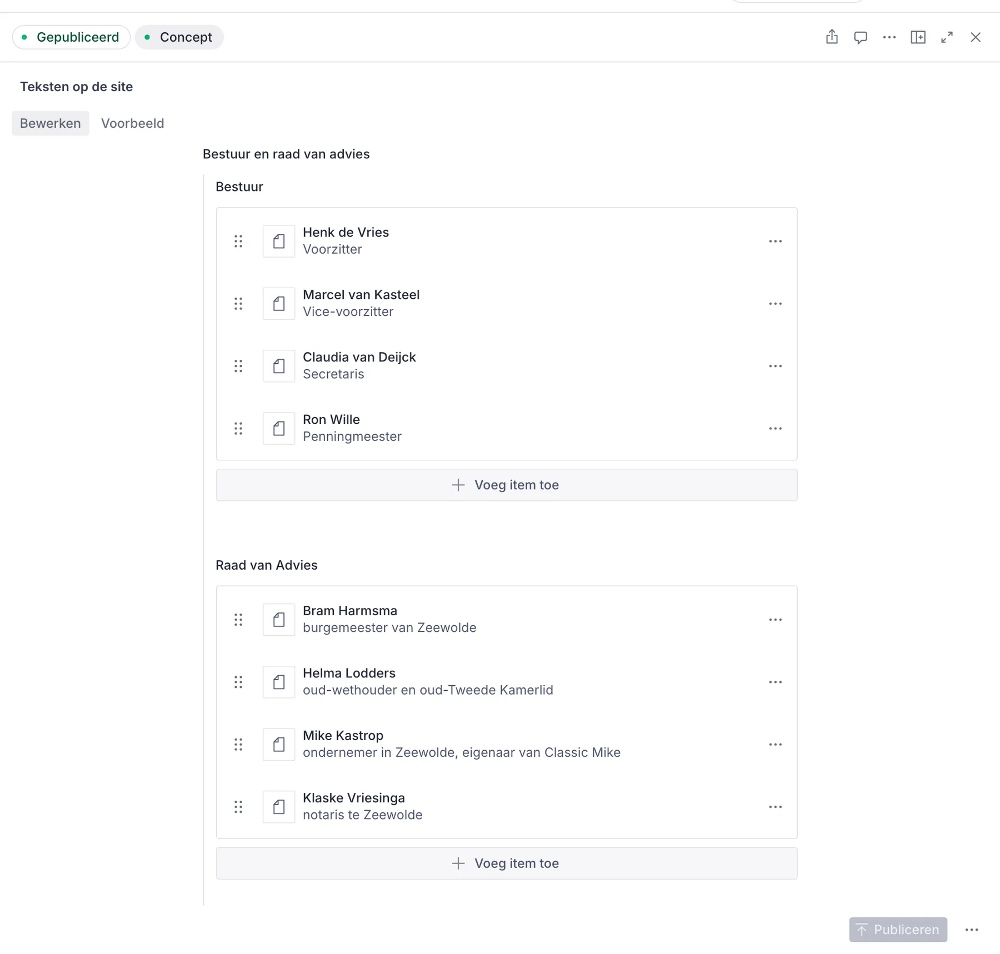</figure>
  </div>
</section>

<!-- 7 -->
<section id="sponsoren">
  <h2>7. Sponsoren</h2>
  <div class="stap breed">
    <div>
      <p>Menu <span class="veld">Sponsoren</span>. De lijst staat in dezelfde volgorde als op de site. Alle sponsoren staan op de voorpagina en op Onze sponsors.</p>
    </div>
    <figure>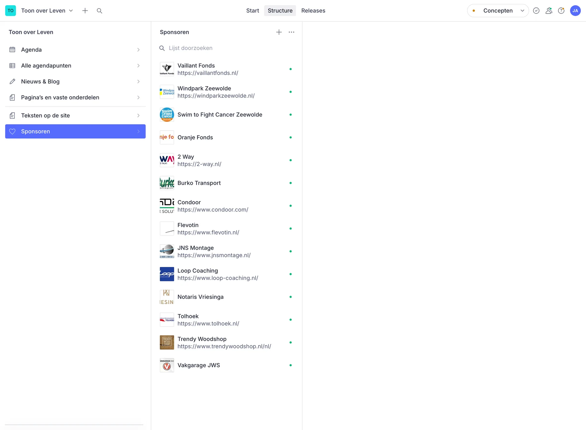</figure>
  </div>
  <div class="stap">
    <div>
      <h3>Een sponsor toevoegen</h3>
      <ol>
        <li>Klik op <span class="knop">+</span> boven de lijst.</li>
        <li><span class="veld">Naam</span>.</li>
        <li><span class="veld">Logo</span>: sleep het bestand in het vak. Een logo op een witte of doorzichtige achtergrond staat het rustigst.</li>
        <li><span class="veld">Website</span>: mag leeg blijven. Ingevuld wordt het logo klikbaar.</li>
        <li><span class="veld">Volgorde</span>: een laag getal staat vooraan. De huidige sponsoren hebben 10, 20, 30 enzovoort, dus 25 komt tussen de tweede en de derde.</li>
        <li>Klik op <span class="knop">Publiceren</span>.</li>
      </ol>
      <p>Een sponsor weghalen: open hem, <span class="knop">···</span> naast Publiceren, dan <span class="veld">Verwijderen</span>.</p>
    </div>
    <figure>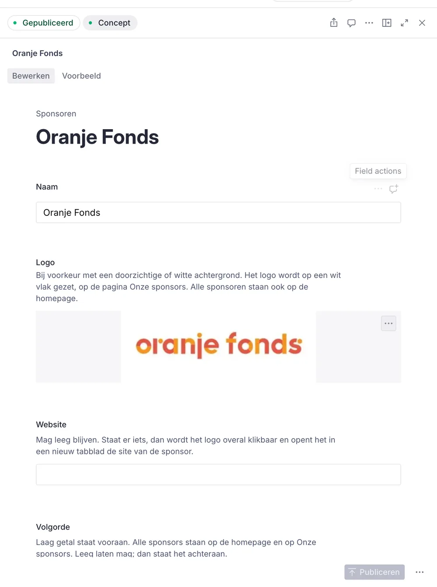</figure>
  </div>
</section>

<!-- 8 -->
<section id="hulp">
  <h2>8. Hulp</h2>
  <div class="stap breed">
    <div>
      <ul>
        <li><strong>Wijziging niet zichtbaar?</strong> Controleer of u op <span class="knop">Publiceren</span> heeft geklikt, wacht een minuut en ververs de pagina.</li>
        <li><strong>Per ongeluk iets gewijzigd?</strong> Nog niet gepubliceerd: <span class="knop">···</span> en <span class="veld">Wijzigingen verwijderen</span>. Al wel gepubliceerd: neem contact met ons op, een recente eerdere versie is terug te halen.</li>
        <li><strong>Iets wat niet in deze handleiding staat</strong>, zoals een nieuwe pagina of een ander blok: mail <span class="adres">hallo@jouwidealewebsite.nl</span>.</li>
      </ul>
    </div>
  </div>
</section>
</main>
